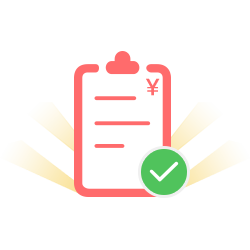

<div class="pages">
    <div data-page="dot-pay-success" class="page dot-pay-success">
        <div class="page-content pad-t-0">

            <div class="self-top-navbar">
                <div class="left">
                    <a href="#" class="back">
                        <svg class="icon" aria-hidden="true">
                            <use xmlns:xlink="http://www.w3.org/1999/xlink" xlink:href="#jd-head_back_black"></use>
                        </svg>
                    </a>
                </div>
                <div class="center">
                    支付
                </div>
                <div class="right">

                </div>
            </div>

            <div class="container mar-t-54">
                
                <span>支付成功</span>
                <a href="">
                    <div class="confirm-next">逛逛其他</div>
                </a>
            </div>

        </div>
    </div>
</div>